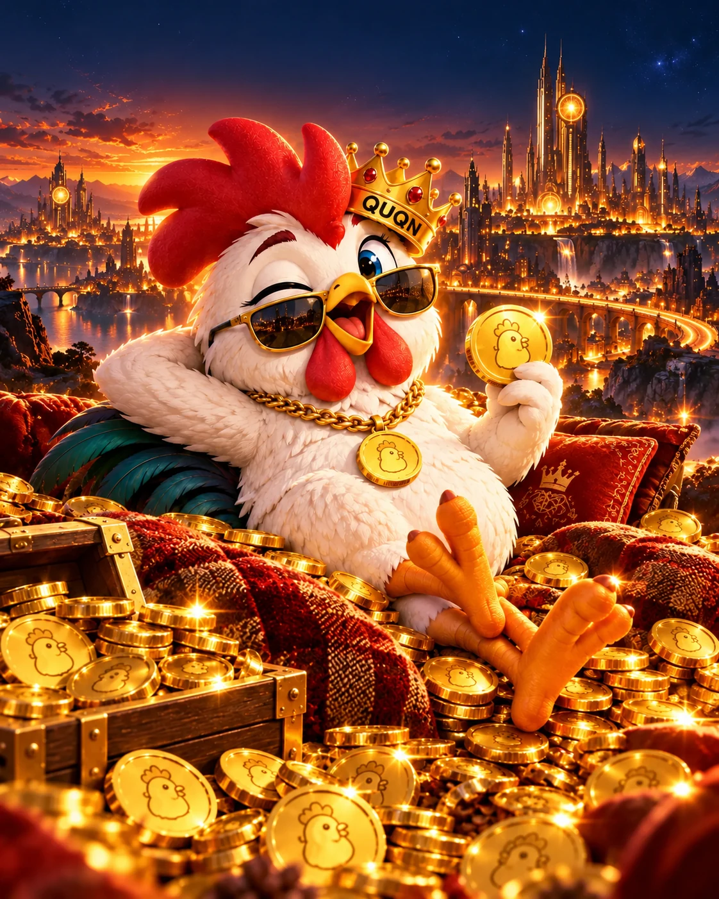
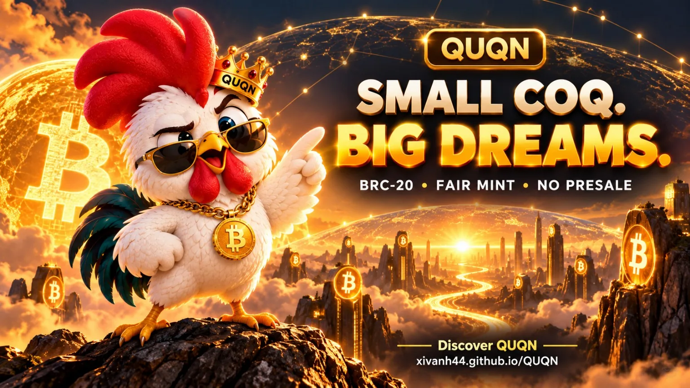
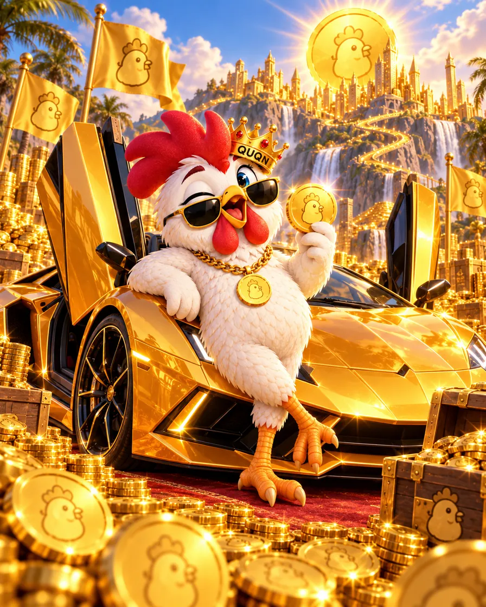
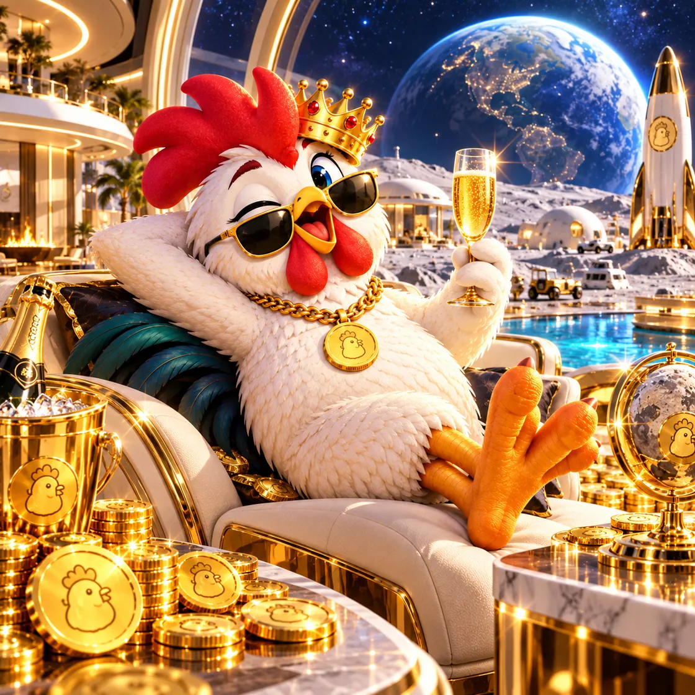

BITCOIN
QUQN lives on Bitcoin mainnet, recorded through inscriptions.
Meet QUQN — the tiny coq who represents every crypto dreamer.
A Bitcoin-native meme character built around a public BRC-20 fair mint.

Third-party services. Always verify ticker QUQN and Bitcoin before confirming.
The whole story starts here.
QUQN lives on Bitcoin mainnet, recorded through inscriptions.
The QUQN ticker uses the classic BRC-20 token format.
Same public mint rules for everyone: 1,000 QUQN per full mint, up to 21 million.
The idea, Bitcoin, fair mint, token facts and the QUQN universe — explained in a few clear points.
Meet the dreamer. The other two are still waiting in the shadows.
Small wallet. Impossible ambition. Some days he worries, some days he believes he can rule the world.
MEET QUQN ↓Another character will enter the story. Their identity remains a secret.
✦ CHAPTER LOCKEDAnother character will enter the story. Their identity remains a secret.
✦ CHAPTER LOCKEDQUQN was born small. His dreams were not.
He watches whales, celebrity coins and legendary memes from the edge of the farm and asks the only question that matters: ‘Why not me?’ QUQN is overconfident, impulsive, charmingly clumsy and absolutely convinced that one day the little guy gets his turn.
“Zey say ze coq cannot fly? Pfff. Today, maybe. Tomorrow... BILLIONAIRE. Euh... probably.

Euh… click ze coq.Community ranks are for fun. They currently create no financial rights or rewards.
Two tools, one simple flow: make your QUQN content here, then download or share it.
Choose a QUQN scene, add your text, then download the finished meme.
Upload a photo. The QUQN frame is applied locally in your browser.
The images on the right are only official QUQN examples. When submissions are enabled, approved community memes and PFPs will appear here.
COMMUNITY SUBMISSIONS · COMING LATER

We kept the weird part of QUQN — just moved it away from the front door.
Follow QUQN on X for memes, Coop updates and on-chain milestones. Join the QUQN community on Telegram.
This is supply progress, not a price target. Every real QUQN minted simply moves the little coq further along the road.
Loading current mint progress…
A creative direction for QUQN, one chapter at a time.
Fair mint on Bitcoin and the first chapter of the story.
Community stories, public ranks and the live holder view.
Introduce the two characters waiting in the shadows.
Explore more places and adventures for the characters.
Story ideas can change. These stages carry no dates, token rewards or promise of value.
No. The website does not sell QUQN, connect to wallets, custody funds or receive payments for the token.
Yes. QUQN is experimental and highly speculative. It can have no market or value.
A BRC-20 fair mint lets participants mint tokens under the same public rules until the maximum supply is reached. For QUQN, there was no presale or ICO and the project does not receive a creator mint fee.
Use the QUQN beginner guide to verify the Bitcoin network, ticker QUQN, the 21,000,000 maximum supply and the 1,000 QUQN mint limit, then choose a compatible third-party BRC-20 inscription service such as UniSat or OKX Wallet.